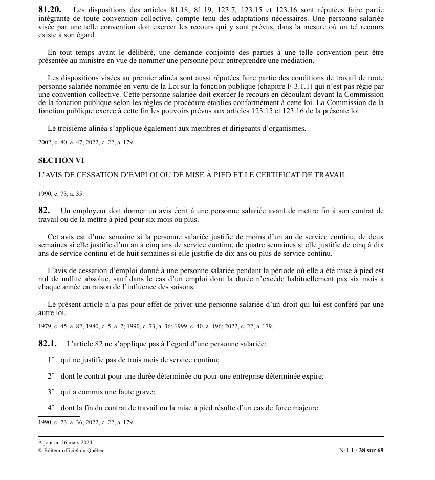

art-81.20-LNT : recours harcèlement
Un article du wiki ⚖️ Recueil législatif
🌐 LegisQuébec · 📄 PDF officiel (page 38)
Texte officiel : capture du PDF

🔗 Ouvrir a cette page : LNT.pdf : page 38 · texte a jour au 26 mars 2024
En bref
Article qui établit deux choses : (1) l'intégration des règles anti-harcèlement aux conventions collectives. Cette obligation vise la CNESST et le ministre.
- Obligation entrée en vigueur le 1er janvier 2019 (PL 176).
Voir aussi
- art-81.18-LNT, harcèlement psychologique · faculté : définit le harcèlement psychologique : une conduite vexatoire, par des comportements, paroles, actes ou gestes répétés, hostiles ou non désirés, qui porte atteinte à la dignité ou à l'intégrité du salarié et entraîne un milieu de travail néfaste.
- art-81.19-LNT, politique harcèlement · consacre le droit de tout salarié à un milieu de travail exempt de harcèlement psychologique et l'obligation corrélative de l'employeur : prendre les moyens raisonnables pour le prévenir et, dès qu'une conduite est portée à sa connaissance, pour la faire cesser.
- ↑ Loi : LNT
Pages qui pointent ici (4)
- art-81.18-LNT, harcèlement psychologique Recueil législatif
- art-81.19-LNT, politique harcèlement Recueil législatif
- LNT Recueil législatif
- LNT - Chapitre VI - Harcèlement psychologique Recueil législatif